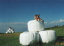
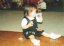

2000年7月23日11時13分撮影
霧が峰の散歩道。草やお花や虫たちと出会いました。
2000年7月22日16時07分撮影
善光寺さんの次に立ち寄った長門牧場。子供たちは大喜び。
由起子はネーネーたちと一緒のことをやりたがります。2000年7月22日12時55分撮影
信州・善光寺さんにて。6時間半のドライブでちょっと疲れ気味の
孫'S(マゴーズと呼んでいる)2000年7月16日15時12分撮影
伊賀牛の会 琵琶湖湖畔／年楳邸にて。広くて走りまわれるおうち
に上機嫌。2000年6月18日撮影
パパとママが合唱関係でお出かけなので、由起子はおばあちゃんと
いとこの享平君(5ヶ月)と近所の公園へ。2000年6月10日12時57分撮影
ママがお仕事のため、パパと過す休日。大好きなシールをおでこに
いっぱい貼りつけてあそびました。2000年6月9日2時23分撮影
パパのうで枕で口をポカーンとあけ、とっても気持ち良さそうに寝て
いたので、パチリ！！
2000年6月3日10時57分撮影
パパとママがとっても感動した「初めての参観日」。
おやつタイムでのヒトコマ。2000年5月20日15時02分撮影
後に写っている観覧車に乗りたかったけど、休止してました。残念！2000年5月20日14時59分撮影
「ちょっとくたびれたので、休憩ですぅ！フゥーッ！」
あやめ池遊園地は由起子にとっては広ーいです。